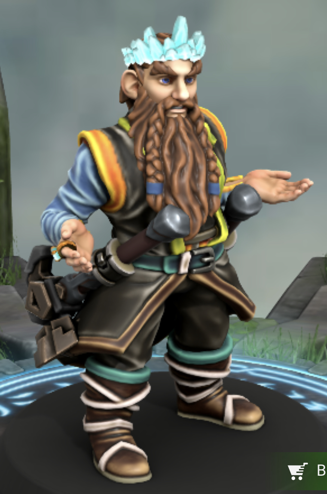

 Alberich is one of the nine rulers of Henderbrick City, along with his twin sister. He hires the party to help him with what he believes is a growing goblin problem. He is, at most times, accompanied by his assassin, Kada, and personal guard, Grakilm.